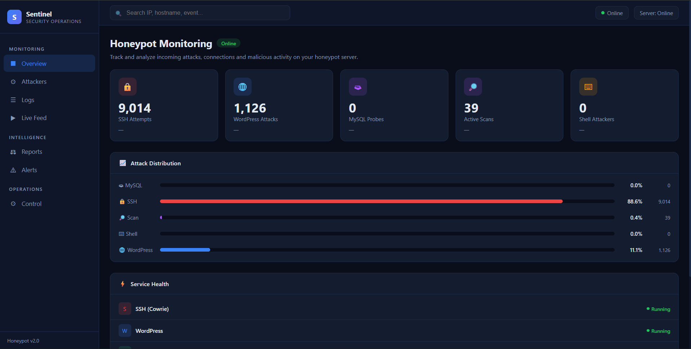
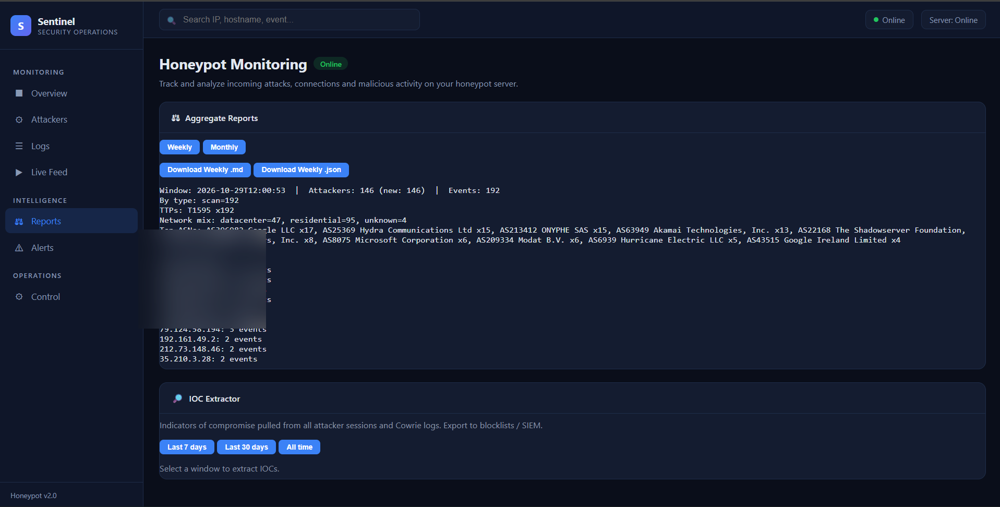
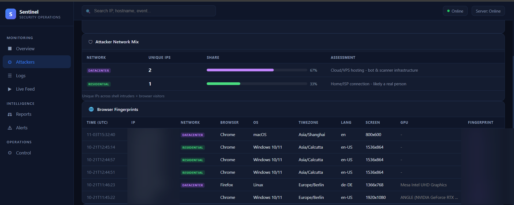
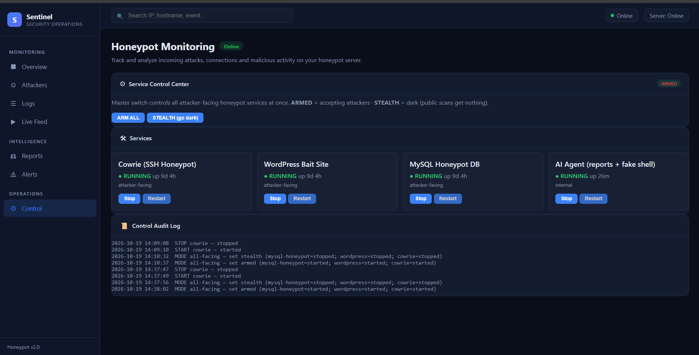

case study 01 / 05
AI-Assisted-Cyber-Deception-Security-Monitoring-Threat-Intelligence-Platform
A multi-service deception environment deployed on AWS EC2 featuring SSH, WordPress and MySQL decoys, centralized Sentinel monitoring operations, and AI-assisted shell interaction simulation.
01Project overview
This project is a high-interaction cyber deception platform deployed on cloud infrastructure (AWS EC2). It creates an instrumented, realistic corporate environment that lures malicious actors to observe their tactics, techniques, and procedures (TTPs) rather than immediately terminating connections.
The platform combines three containerized decoy services (SSH via Cowrie, a WordPress bait website, and a MySQL database decoy) governed by a centralized monitoring platform named Sentinel Security Operations. Sentinel records connection attempts, authentication attempts, executed commands, browser fingerprints, and source network telemetry. An AI-assisted shell workflow using Ollama / Qwen2.5 3B generates simulated command responses. The public overview does not claim that the model is hosted on the EC2 instance.
The honeypot environment is actively deployed on an AWS EC2 instance (Ubuntu 24.04, t3.micro) using Docker Compose, with administrative access isolated over Tailscale. Decoy services are currently operational and gathering genuine telemetry (as shown in the evidence section). Note: Final host-level hardening and automated failover controls remain pending final confirmation before public exposure is finalized. The GitHub repository link is kept pending until officially cleared.
02Problem statement
Traditional network firewalls and perimeter intrusion prevention systems detect and block traffic at the border, but provide zero visibility into what threat actors do after gaining initial access. Conversely, low-interaction honeypots (which only return static banners or basic login prompts) terminate sessions immediately when an adversary attempts interactive commands.
Security teams require safe, controlled high-interaction environments to study credential-stuffing patterns, post-exploitation discovery commands, and web exploitation attempts without putting real production assets or sensitive data at risk.
03Objective
Architect, deploy, and operate a multi-service high-interaction honeypot on AWS cloud infrastructure to capture and analyze threat actor behavior:
- Multi-Vector Decoys: Deploy realistic SSH (Cowrie), web application (WordPress), and database (MySQL) decoy services in isolated containers.
- Centralized Telemetry: Consolidate all connection, authentication, and command events into a centralized Sentinel monitoring console.
- AI-Assisted Shell Simulation: Leverage a local LLM to generate convincing terminal command responses, sustaining attacker interaction while capturing session commands.
- Attacker Profiling: Classify incoming connections by network type (Datacenter bots vs. Residential attackers), capture client-side browser fingerprints, and extract IOCs for SIEM correlation.
- Secure Cloud Architecture: Host the honeypot on AWS EC2 with isolated administrative management via Tailscale, keeping management access completely hidden from attacker-facing surfaces.
04Technologies and tools
| Component | Role in Deployment |
|---|---|
| AWS EC2 | Cloud hosting platform running Ubuntu 24.04 LTS (t3.micro instance) |
| Cowrie | High-interaction SSH decoy container capturing credentials, shell commands, and file downloads |
| WordPress | Interactive web application decoy container capturing malicious web scans and exploit probes |
| MySQL | Database decoy container acting as the backing store and bait database target |
| Sentinel Dashboard | Custom Python FastAPI security operations interface for live monitoring, reporting, and decoy control |
| Ollama (Qwen2.5 3B) | Local LLM component serving dynamic command-line responses for interactive shell sessions; execution host is not specified in this public overview |
| Docker Compose | Container orchestration managing decoy networks, log volumes, and isolation boundaries |
| Tailscale | Encrypted point-to-point mesh VPN providing isolated administrative access separate from public ports |
| MITRE ATT&CK | Framework mapping observed attacker techniques (e.g., T1595 Active Scanning, T1110 Brute Force) |
An earlier prototype was developed in a local VirtualBox lab before migrating to AWS EC2.
05System architecture
The honeypot architecture separates attacker-facing decoy services from backend monitoring, analysis models, and administrative management. The illustration below outlines this structural design.
06Implementation methodology
Decoy Services
- SSH Decoy (Cowrie): Emulates an SSH service, accepting credential attempts, logging usernames and passwords used in brute-force dictionary attacks, and capturing subsequent shell commands and dropped payloads.
- WordPress Bait Site: A deployed WordPress application featuring realistic theme templates and administrative login panels, acting as a honeypot for automated vulnerability scanners, WordPress REST API probes, and credential stuffing.
- MySQL Database Decoy: Serves as the database target for the WordPress decoy and logs direct database connection attempts, authentication requests, and enumeration queries.
Centralized Sentinel Monitoring
Built with Python and FastAPI, the Sentinel Security Operations dashboard aggregates telemetry across all decoys in real time. It features:
- Live metric counters tracking total SSH brute-force attempts, WordPress attacks, MySQL probes, and active network scans.
- Service Health tracking showing the live running status of individual containers.
- Service Control Center featuring master ARMED (accepting attacker traffic) and STEALTH (dark mode) switches, with a service-control audit log recording administrative state transitions.
Attacker Profiling & Browser Fingerprinting
To differentiate between automated mass-scanning infrastructure and targeted interactive human attackers, Sentinel categorizes source IP network types (Datacenter/VPS bot infrastructure vs. Residential ISP connections) and executes client-side browser fingerprinting capturing client operating systems, browsers, screen resolutions, WebGL/GPU hardware renderers, and unique canvas hashes.
AI-Assisted Shell Interaction
When an attacker interacts with the Cowrie shell, commands are passed to the AI agent workflow, which uses Ollama with the Qwen2.5 3B model. The model execution host is not specified in this public description. The model generates contextually plausible UNIX terminal responses while strictly sandboxing the interaction, preventing real code execution while logging all keystrokes and attacker intents.
AWS Cloud Deployment
- Hosted on AWS EC2 in an isolated Virtual Private Cloud (VPC) with custom Security Groups opening only decoy ports.
- Containerized with Docker Compose for consistent service isolation, quick container teardown, and log volume persistence.
- Host administration is restricted strictly to an encrypted Tailscale point-to-point mesh VPN, ensuring that SSH host administration and Sentinel management are never exposed to the public internet.
07Detection / testing workflow
The operational workflow proceeds through four phases from attacker encounter to actionable defense:
- Attacker Ingress: An automated bot or external threat actor discovers exposed decoy ports on AWS and initiates brute-force or web vulnerability probing.
- Telemetry Ingestion: Decoy containers record connection timestamps, source IPs, ASN information, authentication credentials, and request payloads, forwarding events directly to Sentinel.
- AI-Assisted Interaction: If interactive access is attempted, the AI agent provides simulated shell outputs to sustain the session and record attacker post-exploitation tactics.
- Analysis & IOC Extraction: The analyst inspects Sentinel overview metrics, reviews attacker network classifications, and extracts top attacking IPs and TTPs into blocklists and SIEM integration feeds.
08Results and validation
The deployment was validated through active operational runtime on AWS EC2, successfully capturing, profiling, and analyzing live threat actor traffic. Specific results documented in the operational telemetry include:
- 9,014 SSH Brute-Force Attempts: Captured and logged high-volume credential dictionary attacks targeting the Cowrie SSH decoy.
- 1,126 WordPress Attacks: Monitored web application attacks, URI probing, and brute-force login attempts against the WordPress decoy.
- 39 Active Network Scans: Identified widespread reconnaissance activity mapped to MITRE ATT&CK T1595 (Active Scanning).
- Attacker Network Classification: Analyzed threat actor infrastructure, determining that the three externally classified source IPs in the fingerprinting sample were split between datacenter/cloud hosting (two) and residential ISP (one). This small sample is separate from the 146-actor aggregate report.
- Client Browser Fingerprinting: Successfully recorded hardware and browser fingerprints (OS, screen resolution, GPU renderers, canvas hashes) on web visitors.
- High Service Uptime: Validated multi-service container stability with over 9 days of continuous uptime across Cowrie, WordPress, and MySQL decoys.
09Challenges and learning
- Deception Realism vs. Host Isolation: Creating a believable environment requires returning authentic banner information and interactive shell behavior while ensuring absolute containment so the host cannot be abused as an attack pivot.
- Network Classification: Differentiating between bulk scanner noise (Censys, Shadowserver, ONYPHE) and potentially targeted interactive activity using ASN enrichment and network type classification.
- Separating Administrative Plane: Utilizing Tailscale for administrative access proved essential in preventing management port discovery and brute-force noise on administrative interfaces.
- Threat Intelligence Actionability: Raw honeypot logs become valuable only when aggregated into structured reports with IOC extraction ready for firewall blocklists and SIEM alerting rules.
10Screenshots and evidence
The following screenshots are genuine captures from the live Sentinel Security Operations platform running on AWS EC2, demonstrating active decoy monitoring, threat intelligence reporting, attacker fingerprinting, and service management.

Real-time centralized monitoring dashboard tracking live incoming attacks and connection telemetry. Captured metrics verify 9,014 SSH attempts (88.6%), 1,126 WordPress attacks (11.1%), 39 active scans (0.4%), and live service health indicators confirming active Cowrie and WordPress decoys.

Aggregate intelligence report shown in the screenshot: 192 scan events associated with 146 unique attackers in the displayed reporting window, mapped to MITRE ATT&CK T1595 (Active Scanning). The network mix and ASN summary are aggregate figures; the individual source IP list is blurred in the public image.

Attacker profiling sample shown in this screenshot: three externally classified source IPs (two datacenter and one residential, approximately 67% / 33%). The separate aggregate report covers 146 unique attackers in its displayed reporting window. Source IPs and fingerprint identifiers are blurred in the public image.

Decoy management control center featuring master ARMED/STEALTH mode switching. Confirms active container status with over 9 days of continuous uptime across Cowrie SSH, WordPress bait site, and MySQL database decoy, alongside the AI Agent service and a state-change audit log.
Administrative access and cloud host credentials are strictly isolated from decoy services and not published. Sensitive network management endpoints remain protected via Tailscale and security group firewall rules.
11Repository
Containerized deployment is active on AWS EC2. Host hardening validation remains pending confirmation prior to public repository release.